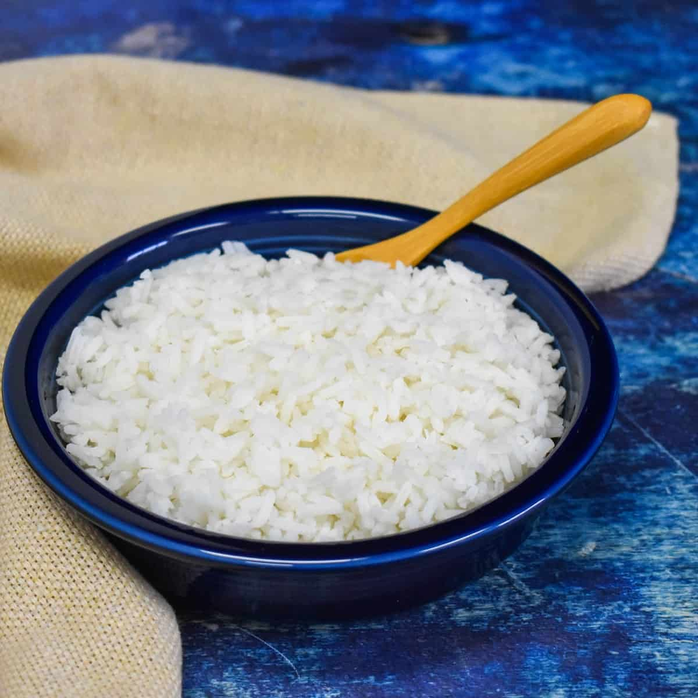

White rice

Description:
White rice is the main side dish made in Brazil. This is the way my mom
would make it and taught my sister and I. What makes this so different is
that we fry it in oil with minced onion and garlic before adding water.
You can also use part water, part chicken broth. The secret is to not let
it overcook because it should come out loose and not sticky.
Ingredients
- 2 cups long-grain white rice
- 2 tablespoons minced onion
- 2 cloves garlic, minced
- 2 tablespoons vegetable oil
- 1 teaspoon salt
- 4 cups hot water
Steps:
-
Place the rice in a colander and rinse thoroughly with cold water; set
aside.
-
Heat the oil in a saucepan over medium heat. Cook the onion in the oil
for one minute. Stir in the garlic and cook until the garlic is golden
brown. Add the rice and salt and cook and stir until the rice begins to
brown. Pour hot water over rice mixture and stir. Reduce heat to low,
cover the saucepan, and allow to simmer until the water has been
absorbed, 20 to 25 minutes.